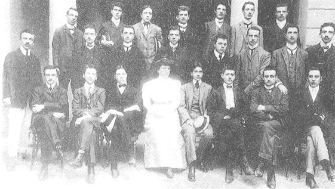
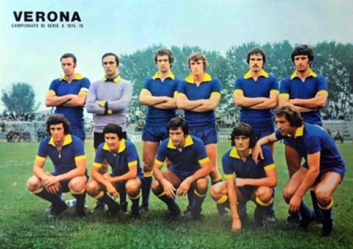
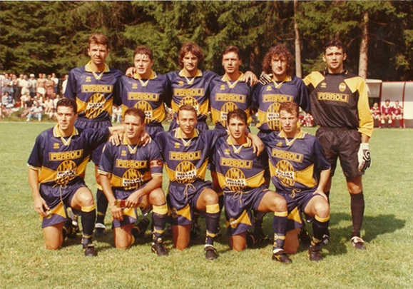
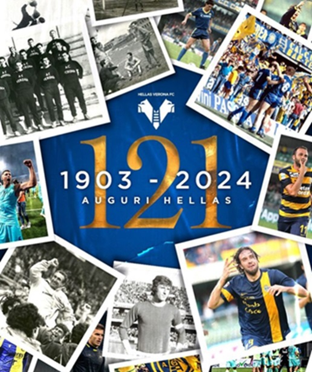

The Maffei students who founded the Hellas Football Association in 1903 In the spring of 1903, a group of students from Verona's 'Scipione Maffei' classical high school founded a football team and, at the suggestion of Professor Decio Corubolo, a Greek teacher, christened it the Hellas Football Association (to recall the ancient Hellas, or modern-day Greece); the first president was Count Fratta Pasini, with a membership fund of 32 lire. In 1919, after the First World War, Hellas took on the name Football Club Hellas Verona, incorporating, by merger, the minor club called Verona. At the start of the single-round Serie A, the team, which a year earlier had merged two Verona rivals, Bentegodi and Scaligera, taking on the name A.C. Verona, started from the Serie B championship, following the poor placing (12th place) obtained the previous year in the National Division, which prevented the club from registering for the Serie A. On its debut in the cadet championship (1929-1930) it closed with an encouraging sixth place, 7 points behind Legnano who had been promoted to the top division. In 1941, as the Second World War raged on, Verona, after a decade entirely spent in Serie B, faced one of its worst moments in history, being relegated to Serie C. However, the Gialloblù managed to rise again fairly quickly, in just two seasons (1943). Verona in the 1956-1957 season, which won the first promotion in its history to the single-round Serie A. After returning to the higher category, Verona began a long period in Serie B, until, after fourteen years, they won their first Serie B championship: in fact, in 1957 the Gialloblù, coached by Angelo Piccioli (the second most present coach on the Scaligera bench with 225 benches, behind only Bagnoli), were the protagonists of the tournament and, drawing at home with Como 1-1 on the last day, obtained the decisive point for the much coveted promotion. Verona remained in Serie A for only one season (1957-1958): an excellent first leg, which saw the Gialloblù round the mark with a reassuring 18 points from 17 matches, was followed by a disastrous second leg, which culminated in the defeat against Bari (runners-up in the 1957-1958 Serie B) in the double play-off that led to the relegation of the Scaligera club to the lower division. In the summer of 1958 Verona absorbed a minor Veronese club, A.S. Hellas, newly promoted to Serie C, in order to resume the name Associazione Calcio Hellas Verona in homage to its origins. Anonymous championships followed, ennobled however by the semi-final of the 1963-1964 Coppa Italia, reached with a 1-0 victory at home to Juventus. In 1968, after an ambitious purchase campaign, the Verona of new president Saverio Garonzi, led on the bench by Nils Liedholm, regained the category exactly a decade after the last promotion. The leap in category was gained on the last day, thanks to a 1-0 victory over Padova, but above all to a comeback away win (1-2) against direct rival Bari, on the penultimate day.
Hellas, on their return to the top flight after their brief Serie A adventure in 1958, this time saved themselves with relative ease, leading a balanced season that ended in tenth place while, in the following seasons, they managed to rack up a series of important salvations in the top flight. In 1974 Hellas finished the season in fourth-last place, avoiding relegation, but were downgraded to last place and condemned to Serie B during the summer months due to the 'phone call scandal' involving team president Saverio Garonzi and a former player, Sergio Clerici. However, Verona immediately returned to Serie A at the end of the next cadet championship (1975). In 1978 the team was unfortunately involved in the train accident at Murazze di Vado. Due to an aeroplane mishap caused by bad weather, the Veneto club had resorted to using the train to reach the capital, where the championship match against Roma was scheduled. The players and staff were travelling on the first car of the 'Freccia della Laguna', which near Monzuno ran over the carriages of the Bari-Trieste express train that had derailed a few seconds earlier. As fate would have it, at the time of the disaster, the formation had moved to the restaurant car at the rear of the train for lunch, emerging almost unharmed from the accident, which claimed some forty lives among the carriages hurled by the collision into the cliff below. After playing ten out of eleven championships in Serie A from 1968 onwards, Verona returned to Serie B in 1979. In search of balance and with a profound change of ownership, managers and players, the club remained stuck in the cadets for two years, until the arrival of new coach Osvaldo Bagnoli. With the arrival of the Milanese coach, a former Hellas player, came what was to be the most important cycle of victories in the history of the Scaliger club: in the 1981-82 season Hellas, built on the axis of Garella, Tricella, Di Gennaro and Penzo, won the cadet championship and built the foundations for its future. The following year the Gialloblù amazed everyone and, in the first round of the Serie A, they long contested the first place in the standings to Roma, who then won the Scudetto;[17] in the return round there was the inevitable decline of a team built without great ambitions, but the Scaligeri still managed to finish the championship in fourth place, earning the qualification for the next edition of the UEFA Cup. In 1983-84 Verona also enjoyed an excellent championship: just like the year before, by the tenth day they were in first place in joint-top spot with Roma and, like the year before, they suffered a downturn in the second half of the season that led to a brilliant sixth place finish.
In 1991, despite the club's bankruptcy, the players led by coach Eugenio Fascetti nevertheless finished the championship (1990-91) in the best of ways, achieving an unexpected promotion to Serie A. However, the team was relegated again the following season, with several days to spare. Verona thus began the seesaw between the top and cadet series. In 1995, the club acquired the name Hellas Verona Football Club, which it still retains today (after having used the name Verona Football Club in the four years after bankruptcy). After two promotions (1990-91 with Eugenio Fascetti and 1995-96 with Attilio Perotti) followed by immediate relegations, the victory in the Serie B championship in 1998-99 under the guidance of the up-and-coming Cesare Prandelli (who that year put together a streak of eight consecutive victories between matchdays 6 and 13, a record for the Italian Serie B, which would be equalled by Mandorlini in 2011-12) seemed to open a new phase in the club's history. The third millennium began with the Scaligeri still coached by Prandelli, who, after a difficult start, started a series of consecutive useful results in the second half of the season, ending the 1999-00 Serie A championship in ninth place. The following year (2001), however, Hellas only managed to save themselves after winning the double play-off against Reggina, while the 2001-02 championship ended in relegation following the Venetians' ugly away defeat against Piacenza (3-0). A few anonymous years in the cadetteria followed, with Verona going no further than a sweaty salvation. The team came close to returning to the top flight in 2005, when they finished the season in 7th place, just one point behind Ascoli (promoted to Serie A after Genoa's disqualification and the economic problems of Perugia and Torino). In the 2006-07 season, Verona's crisis became even more acute and the club, which had finished the championship in the lower parts of the standings, had to play a play-out against La Spezia, in which they came off worst (2-1 defeat in La Spezia and 0-0 in Verona), relegating to Serie C after sixty-four years. In the 2007-08 season, having started with the aim of winning the championship and being 'the Juventus of Serie C', Verona instead finished last in the standings on equal points with Manfredonia, avoiding direct relegation only thanks to direct clashes in their favour; Forced to play in the play-out against Pro Patria, they won the first leg 1-0 and drew 1-1 in the return, only managing to save themselves thanks to a goal scored by Uzbek Zeytulaev in the second half. Over the next two seasons, Verona's performances and corporate situation improved significantly, so much so that in 2009-10 the team dominated the championship for a long time, but failed to make the leap in category; the Scaligeri squandered the accumulated advantage in the final sprint and were defeated in the play-off final by Pescara (2-2, 0-1).
In the 2010s, Hellas Verona went through a period of significant transformation and turmoil, characterised by ups and downs. After promotion to Serie A in the 2010-11 season, which represented a return to the top flight after a long period of absence, the team experienced an initial difficulty in adapting to the highest level of Italian football. However, under new coach Andrea Mandorlini, Hellas managed a surprising comeback in the second half of the season, culminating in a fifth place finish and qualification for the play-offs. The play-off victory guaranteed the team promotion to Serie A for the following season. The return to Serie A in the 2012-13 season was characterised by considerable success, with Hellas Verona finishing second in the standings behind Sassuolo, thus securing a place in Italy's top flight after eleven years. Striker Daniele Cacia was a fundamental reference point for the team, winning the title of league top scorer with 24 goals. In the following season, the team showed signs of growth and consolidation, with a solid performance in the first round that saw them fight for a place in European competitions. Luca Toni, in particular, emerged as a prolific striker, winning the title of Serie A top scorer with 22 goals and setting several records for Verona. However, despite individual successes, the team missed out on qualifying for European competitions, finishing the season in tenth place. In the following season, Hellas Verona experienced a downturn, finishing 13th in the league table. Despite this, Luca Toni continued to shine as the club's top scorer and the team began to prepare for new challenges and changes. In the 2020s, Hellas Verona continued its consolidation in Serie A, demonstrating greater stability and consistency in results. Under the leadership of Ivan Jurić, the team has maintained a firm position at the top of the table, proving to be a competitive force in Italian football. The contribution of players like Miguel Veloso, Darko Lazovic and Mattia Zaccagni has been crucial to the team's continued success. In the 2021-22 season, despite a change of coach with the arrival of Eusebio Di Francesco, Hellas Verona continued to achieve solid results, finishing the season in ninth place in the league table. Goals from Giovanni Simeone, Gianluca Caprari and Antonín Barák contributed to the team's success, confirming them as one of the emerging forces in Italian football. Despite the challenges and changes over the years, Hellas Verona proved to be a resilient and evolving team, ready to face future challenges with determination and commitment.
